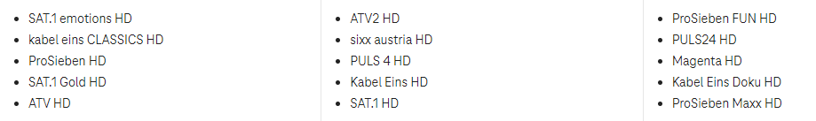

Vorspulen, Pause und zurück spulen bei Replayfunktion gestört - Lizenzrechtliche Gründe oder technisches Problem?
Grafreini
Hallo, seit letzter Woche gehen bei vielen Sendern die Replayfunktion ( vorspielen, Pause drücken, zurückspielen usw) nicht mehr. Angeblich aus lizenzrechtlichen Gründen?!?!
Letzte Woche bekam ich die Auskunft das es sich um ein vorübergehendes Problem handelnt an dem gearbeitet wird.
Heute bekam ich die Auskunft das es bei allen PRO7 Sendern und auch zb bei ATV nicht mehr gehen wird.
Weis jemand in der Community Gruppe mehr als die technische Abteilung von Magenta.
Warum kann ich im Replay- und Aufnahme-Modus Inhalte nicht überspringen?
- Das Vorspulen bei den Sendern der PRO 7 Gruppe ist aus lizenzrechtlichen Gründen nicht möglich.
Das Vorspulen hat ja in den letzten Tagen funktioniert. Wieso geht es jetzt nicht mehr?
- Das Vorspulen musste auf Wunsch der Sender deaktiviert werden.
Vermutlich geht bei den betroffenen Sendern zu bestimmten Zeitpunkten das Pausieren und Zurückspulen auch nicht.
Betroffen sind folgende Sender:

Wenn dein TV Box allgemein immer wieder Probleme macht, findest du hier weitere Hilfe:
Aber warum wird dann diese Funktionalität noch aktiv in den Medien beworben und somit auch von uns Kunden bezahlt.
Wunsch der Sender hin oder her, es handelt sich hier um einen großen Teil der Sender, die bei Euch möglich ist und ein aktiv beworbenes Feature, das eigentlich die einzig positive Funktionalität der Schrottboxen ist, wurde entfernt…. Was soll man da als Kunde sagen…
Jonathan Dorian
Am 24.3.2024 um 19:57 schrieb Demaxs:
Aber warum wird dann diese Funktionalität noch aktiv in den Medien beworben
Darf ich fragen, wo genau diese Funktion beworben wird? Am besten mit Link und Screenshot hier posten, damit ich das an die entsprechenden Stellen intern weiterleiten kann.
Aktuell wird es so auf unserer Webseite formuliert:
kurz hab ich überlegt, ob ich diesem Posting etwas Sachliches entgegnen sollte und hatte auch schon alles zusammenkopiert…
Aber nach kurzer Überlegung steig ich nicht auf diese „Falle“ ein… Kurz zusammengefasst, wenn der einzige Umgang mit unzufriedenen Kunden der Angriff ist, dann soll dem so sein und ist diesem auch nichts mehr hinzuzufügen.
Wo sind nur die Zeiten geblieben, wo der Kunde noch König war…
Maverick
Am 27.3.2024 um 16:24 schrieb Demaxs:
Wo sind nur die Zeiten geblieben, wo der Kunde noch König war…
Der Kunde ist schon lange vom König zum Bettler und Bitsteller degradiert worden.
Die Obrigkeit wedelt nur noch mit erhobenen Zeigefinger um klarzustellen, wer hier das Nachsehen hat.
Ist aber mittlerweile "fast" überall so.
w_k
Liebes Magenta Team,
Ist schon schade, diese Funktion ist wohl eine der wesentlichsten, warum man anstelle Sateliten-Empfang eine Streamingplatform wie MagentaTV auswählt. Ich persönlich empfinde es sogar als lästig und ärgerlich, wenn's beim zappen bei dem einen Sender geht und beim anderen nicht.
Ich vermute der ProSieben/Sat1 Mediengruppe geht es hier um die "Zwangsbeglückung" mit Werbung und ähnlichem auch während eines Replay. Nun ich für meinen Teil halte es so, dass ich diese Werbung bewusst nicht konsumiere, also wegzapppe oder die Pause nutze nicht vor dem TV zu sitzen. Es bleibt für mich also nur die schlechte "User-Experience" die ja von den Marketing Experten und Expertinnen also so wichtig eingestuft wird, damit das Produkt auch gut verkauft werden kann.
Wie auch immer, wenn wir alle das so akzeptieren, dann wird es wohl noch weitere Schritte der "Zwangsbeglückung" im TV in Zukunft geben.
Aber ich gebe die Hoffnung nicht auf, dass Maganta als einer der größten europäischen Telekomkonzerne, seine Marktstellung nutzen wird, um auch auf Zulieferer wie die ProSieben/Sat1 Mediengruppe etwas Einfluß zu nehmen deren Angebot wieder komfortabel zu präsentieren.
Für meinen Teil werde ich nach Ablauf der Bindung erneut prüfen, ob genügend Vorteile beim Produkt MagentaTV überwiegen oder ich wieder mit der guten alten Satelitenschüssel zufrieden sein werde. Mit dem passenden Empfänger kann ich da mit Timeshiftfuntion halt auch solche Sender - "noch" -
zurückspulen .
P/S.:
Ich möchte an dieser Stelle festhalten, dass ich ich langjähriger und sehr zufriedener Magenta Telekomkunde bin. Herzlichen Dank an das gesamte Magenta Team für die gute Leistung die Ihr täglich erbringt.
Frygo
Am 4.3.2024 um 17:30 schrieb Jonathan Dorian:
Das Vorspulen musste auf Wunsch der Sender deaktiviert werden.
Das ist gut, aber was die Kunde will, wer alles zahlt ist für der Sender egal. Und wenn schon Wunsch der Sender war. Na und. Unsere wunsch, dass soll wieder aktiviert werden. Von mir aus kann euch ein paar Sender kündigen, dann hat die andere diese wunsch nicht mehr. Ohne Magenta, uns seine Kunden kann sowieso nicht überleben.
skeetmaster
Vom rosa Elefanten mal wieder - als jahrzehntelanger Kunde - einen Tritt in den Kundenarsch bekommen. Kein Vorspulen bei Aufnahmen mehr möglich.... Erotic Lounge nur noch über Browser. Daher wird sofort von dem Widerrufsrecht gebraucht gemacht. Ich suche mir dann einen schnellen Internet Provider und mache den Rest mit Waipu und Sky für die Hälfte des Magenta-Preises. Irgendwann ist ja auch mal genug mit der Kunden***********e.... Für mich gilt nie wieder Telekom.... nach 30 Jahren..... Ihr seit das Gegenteil von Amazon.... da steht die Kundenzufriedenheit über alles und deren Aktien steigen, eure sinken zurecht.
am3001
Alle reden nur vom vorspulen, mich nervt, dass man weder pausieren noch zurückspulen kann. Das war und ist mir sehr wichtig. Und es liegt nicht an den Sendern, hab es gerade mal probiert, auf keinem Sender geht es. Von wegen "halt mal kurz an, ich muss mal..." dann brauch ich das neue Magenta nicht wirklich. Lasst euch bitte was einfallen, sonst werde ich meinen Vertrag nicht verlängern.
Karo
Hallo
@am3001
, ich bin deiner Meldung nachgegangen und habe die Pause-Funktion getestet.
Bei unserem Testgerät hat dies bei den Sendern funktioniert, welche nicht das Thema mit dem vor- oder zurückspulen haben.
Drückst du in der Mitte der Fernbedienung den runden Button? LG Karo
Mein Problem ist, dass ich nicht immer dort weiterschauen kann wo ich aufgehört habe. Dann muss ich wieder alles nochmal anschauen bis zu dieser Stelle, wo ich vorher den Film gestoppt habe…
Jonathan Dorian
Am 25.12.2024 um 22:12 schrieb JoMi68:
Mein Problem ist, dass ich nicht immer dort weiterschauen kann wo ich aufgehört habe. Dann muss ich wieder alles nochmal anschauen bis zu dieser Stelle, wo ich vorher den Film gestoppt habe…
Gilt das in deinem Fall für Aufnahmen oder Replay Inhalte?
{kind=link}
{kind=link}